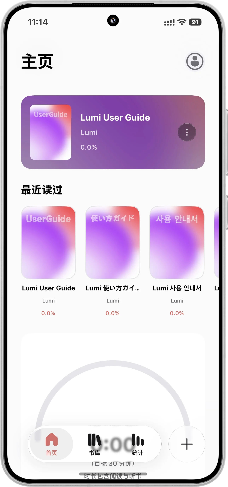
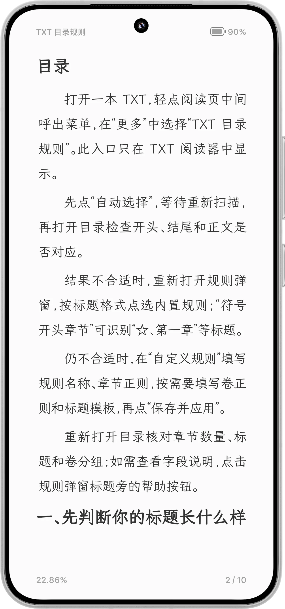
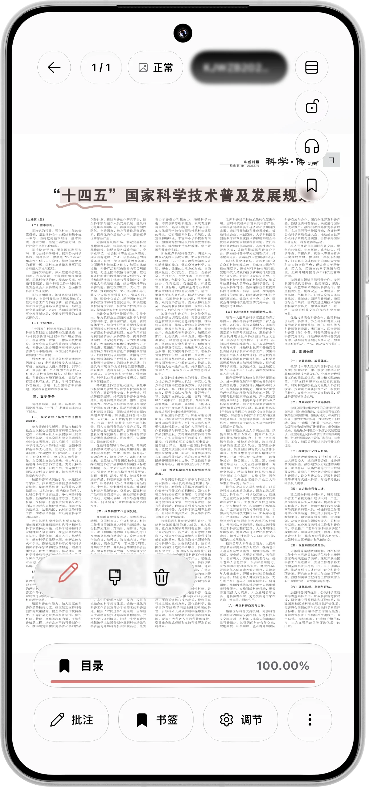
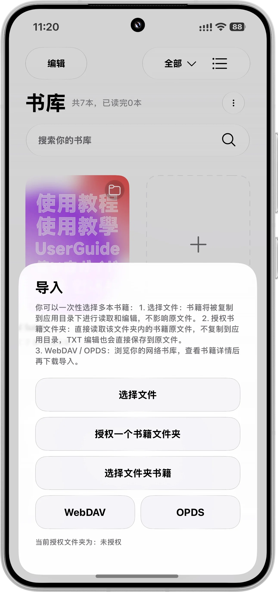
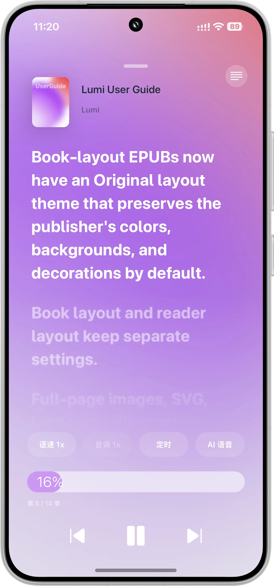
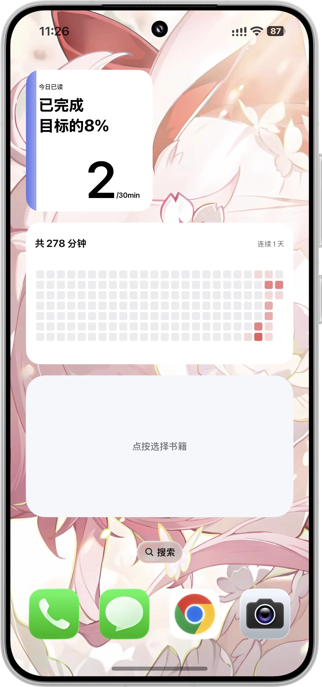

一页一页，
读成自己的样子。
从打开文件，到读完后仍记得那句话。Lumi 把每个阅读时刻里需要的工具，放在刚刚好的位置。
无论什么格式，
都能从这一页开始。
把 EPUB、PDF、TXT、MOBI、AZW、AZW3、CBZ 或 Markdown 交给 Lumi。选择本地文件、导入文件夹，或从自己的 WebDAV 书架按需下载。
支持格式与导入方式
支持 EPUB、PDF、TXT、MOBI、无 DRM 的 AZW / AZW3、CBZ 漫画和 Markdown。通过 Android 文件选择器导入单本书或授权文件夹，也可连接个人 WebDAV 服务器浏览远程书库。

排版、颜色、翻页，
都由你调校。
纯白、暖光、浅灰和暗夜阅读主题，自定义字体和精细排版。单页或双页阅读、滚动与翻页动画，让长时间阅读更舒服。
阅读体验细节
支持字号、字重、行距、段间距、缩进、页边距、文字颜色、背景图片和自定义字体。EPUB 可选择原书排版；PDF 可进行智能解析与自由批注。平板横屏支持双页对开。

划过的句子，
不必只是划过。
随手高亮、写下想法、插入书签，再用标签整理自己的阅读线索。选中的文字还可以制成摘录卡片，或导出为 TXT 与 Markdown。
标注、摘录与整理
支持多色高亮、下划线、书签、笔记编辑、批量筛选、标签分类与删除恢复。基础版提供标准摘录样式；官方 Premium 提供高级模板及相关预览。笔记可下载导出，方便备份和继续整理。

把书放在你信任的地方。
连接个人 WebDAV，浏览远程书库，想读时再下载。书籍、阅读进度、书签和笔记可通过你配置的服务器同步。
同步由你掌控
WebDAV 服务器地址和凭据由用户自行配置。核心阅读不依赖联网或 Lumi 账号。密钥在设备上加密保存，连接局域网服务器时按需申请本地网络权限。

眼睛休息一下，
故事接着走。
使用系统语音朗读书籍，切换章节与语音引擎，或进入全屏听书。离开书籍页面后，也可以通过悬浮字幕继续收听。
听书时可以做什么
全屏听书支持封面和字幕模式、章节切换、语音设置与独立记忆的听书进度。悬浮字幕可调整位置、背景、透明度和尺寸；可配置第三方 TTS 服务由用户主动启用。

读书的日常，
也值得被记下来。
用封面书架、小组件和阅读统计，让正在读的书留在手边。整理藏书、查看进度，在不同设备形态上继续阅读。
书架、组件与报告
基础体验包含书籍搜索与分类、继续阅读与摘录小组件、日 / 周 / 月 / 年阅读统计。官方 Premium 提供阅读报告和标签管理等可选功能；未解锁时可预览，导出等高级操作按官方版本规则解锁。

给下一本书，
留个位置。
基础阅读免费、开源、无广告。